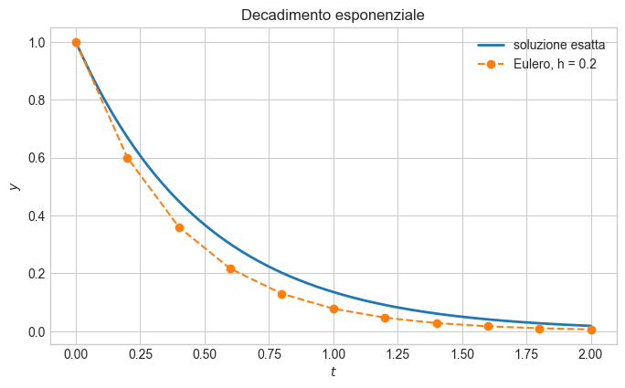
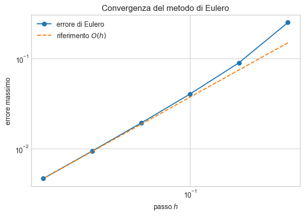
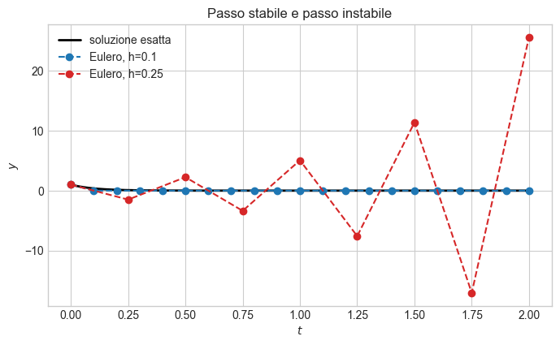
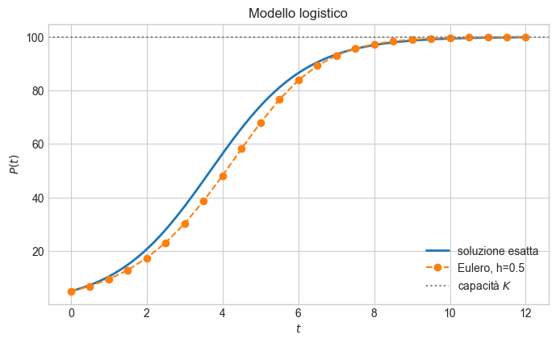
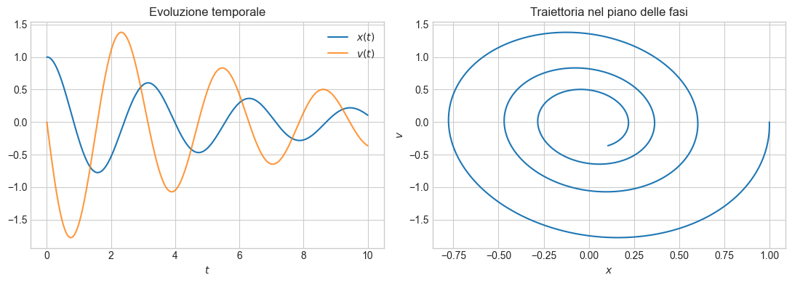

Introduzione alle equazioni differenziali e ai problemi di Cauchy#
Obiettivi didattici#
Al termine del notebook saremo in grado di:
riconoscere un’equazione differenziale ordinaria e il suo ordine;
formulare un problema di Cauchy;
comprendere il ruolo del dato iniziale;
derivare e implementare il metodo di Eulero esplicito;
valutare sperimentalmente l’errore e l’ordine di convergenza;
riconoscere l’effetto del passo sulla stabilità numerica.
Perché studiare le equazioni differenziali?#
Molti fenomeni vengono descritti più naturalmente specificando come una quantità varia anziché fornendo direttamente il suo valore. Se \(y(t)\) indica una grandezza dipendente dal tempo, la derivata \(y'(t)\) ne rappresenta il tasso di variazione.
Esempi:
crescita di una popolazione o diffusione di un’epidemia;
decadimento di una sostanza;
moto di un corpo;
evoluzione di temperatura o concentrazione;
dinamiche continue usate in modelli per l’analisi dei dati, come i neural ODE.
Un’equazione che lega una funzione incognita alle sue derivate è detta equazione differenziale.
Equazioni differenziali ordinarie#
Un’equazione differenziale ordinaria (ODE, Ordinary Differential Equation) contiene derivate rispetto a una sola variabile indipendente.
L’ordine dell’equazione è l’ordine massimo delle derivate presenti. Per esempio:
è un’ODE del primo ordine, mentre
è un’ODE del secondo ordine. In questo notebook consideriamo soprattutto equazioni del primo ordine scritte nella forma
La funzione \(f\) descrive la legge di evoluzione del sistema.
Una famiglia di soluzioni
Consideriamo
Tutte le funzioni
soddisfano l’equazione. L’equazione differenziale, da sola, non determina quindi un’unica soluzione: occorre un’informazione aggiuntiva.
Il problema di Cauchy#
Un problema di Cauchy per un’ODE del primo ordine consiste nel trovare una funzione \(y(t)\) tale che
Il valore \(y_0\) è il dato iniziale. Geometricamente, stiamo cercando la curva integrale che passa per il punto \((t_0,y_0)\) e la cui pendenza in ogni punto è assegnata da \(f(t,y)\).
Nell’esempio \(y'=-2y\), imponendo \(y(0)=1\) si ottiene \(C=1\) e quindi
Esistenza e unicità: idea essenziale
Prima di approssimare una soluzione è naturale chiedersi se essa esista e sia unica. Una versione semplificata del teorema di Cauchy–Lipschitz afferma che, vicino a \((t_0,y_0)\):
se \(f(t,y)\) è continua, esiste almeno una soluzione locale;
se inoltre \(f\) è lipschitziana rispetto a \(y\), la soluzione locale è unica.
La condizione di Lipschitz richiede che esista \(L>0\) tale che
Se \(\partial f/\partial y\) è continua e limitata in una regione, allora in quella regione la condizione è soddisfatta. Per esempio, \(f(t,y)=-2y\) è lipschitziana rispetto a \(y\) con \(L=2\).
Nota. Queste condizioni sono sufficienti, non necessarie. In questo corso ci concentreremo sulla costruzione e sull’analisi dei metodi numerici.
Dalla soluzione continua ai valori numerici#
In generale non è possibile esprimere la soluzione di un problema di Cauchy mediante una formula chiusa. Cerchiamo allora approssimazioni in un insieme discreto di istanti.
Dividiamo \([t_0,T]\) in \(N\) sottointervalli di ampiezza costante
Indichiamo con \(y_n\) un’approssimazione del valore esatto \(y(t_n)\). Il numero \(h\) è detto passo di discretizzazione.
Il metodo di Eulero esplicito#
Dalla definizione di derivata, per \(h\) piccolo,
Poiché l’equazione impone \(y'(t_n)=f(t_n,y(t_n))\), otteniamo
Sostituendo i valori esatti con le approssimazioni numeriche segue la formula di Eulero:
Il metodo è esplicito perché \(y_{n+1}\) si calcola direttamente usando quantità già note. Geometricamente, a ogni passo si prosegue lungo la retta tangente determinata dalla pendenza \(f(t_n,y_n)\).
Algoritmo#
Input: funzione \(f\), estremi \(t_0,T\), dato iniziale \(y_0\), numero di passi \(N\).
Calcola \(h=(T-t_0)/N\).
Poni \(t_0\) e \(y_0\) come valori iniziali.
Per \(n=0,\ldots,N-1\), calcola \(y_{n+1}=y_n+h f(t_n,y_n)\).
Restituisci i nodi \(t_n\) e le approssimazioni \(y_n\).
import numpy as np
import matplotlib.pyplot as plt
plt.style.use('seaborn-v0_8-whitegrid')
def eulero_esplicito(f, intervallo, y0, N):
"""
Approssima y' = f(t, y), y(t0) = y0, con Eulero esplicito.
Parametri
---------
f : funzione f(t, y)
intervallo : coppia (t0, T)
y0 : dato iniziale scalare o vettoriale
N : numero di passi
"""
t0, T = intervallo
t = np.linspace(t0, T, N + 1)
h = (T - t0) / N
y0_array = np.asarray(y0, dtype=float)
y = np.zeros((N + 1,) + y0_array.shape)
y[0] = y0_array
for n in range(N):
y[n + 1] = y[n] + h * np.asarray(f(t[n], y[n]))
return t, y
Esempio 1
Consideriamo il problema
La soluzione esatta è \(y(t)=e^{-2t}\). Applichiamo Eulero con \(N=10\), dunque \(h=0.2\). Il primo passo è
f = lambda t, y: -2 * y
soluzione_esatta = lambda t: np.exp(-2 * t)
t, y_eulero = eulero_esplicito(f, (0, 2), y0=1.0, N=10)
y_esatta = soluzione_esatta(t)
print(f'Passo h = {t[1] - t[0]:.2f}')
print(' n t_n Eulero Esatta Errore')
for n, (tn, yn, ye) in enumerate(zip(t, y_eulero, y_esatta)):
print(f'{n:3d} {tn:6.2f} {yn:10.6f} {ye:10.6f} {abs(yn-ye):10.2e}')
Passo h = 0.20
n t_n Eulero Esatta Errore
0 0.00 1.000000 1.000000 0.00e+00
1 0.20 0.600000 0.670320 7.03e-02
2 0.40 0.360000 0.449329 8.93e-02
3 0.60 0.216000 0.301194 8.52e-02
4 0.80 0.129600 0.201897 7.23e-02
5 1.00 0.077760 0.135335 5.76e-02
6 1.20 0.046656 0.090718 4.41e-02
7 1.40 0.027994 0.060810 3.28e-02
8 1.60 0.016796 0.040762 2.40e-02
9 1.80 0.010078 0.027324 1.72e-02
10 2.00 0.006047 0.018316 1.23e-02
t_fine = np.linspace(0, 2, 400)
plt.figure(figsize=(8, 4.5))
plt.plot(t_fine, soluzione_esatta(t_fine), label='soluzione esatta', linewidth=2)
plt.plot(t, y_eulero, 'o--', label='Eulero, h = 0.2')
plt.xlabel('$t$')
plt.ylabel('$y$')
plt.title('Decadimento esponenziale')
plt.legend()
plt.show()

Errore e convergenza#
L’errore globale al nodo \(t_n\) è
Per misurare l’errore sull’intero intervallo usiamo, per esempio,
Sotto opportune ipotesi di regolarità, il metodo di Eulero è di ordine uno:
Quindi, dimezzando \(h\), ci aspettiamo che l’errore globale si dimezzi circa. Verifichiamolo numericamente.
numeri_passi = np.array([5, 10, 20, 40, 80, 160])
passi = 2.0 / numeri_passi
errori = []
for N in numeri_passi:
t_num, y_num = eulero_esplicito(f, (0, 2), y0=1.0, N=N)
errore = np.max(np.abs(soluzione_esatta(t_num) - y_num))
errori.append(errore)
errori = np.array(errori)
ordini = np.log2(errori[:-1] / errori[1:])
print(' h errore massimo ordine stimato')
print(f'{passi[0]:8.5f} {errori[0]:10.3e} -')
for h, err, p in zip(passi[1:], errori[1:], ordini):
print(f'{h:8.5f} {err:10.3e} {p:5.3f}')
h errore massimo ordine stimato
0.40000 2.493e-01 -
0.20000 8.933e-02 1.481
0.10000 4.020e-02 1.152
0.05000 1.920e-02 1.066
0.02500 9.394e-03 1.031
0.01250 4.647e-03 1.015
plt.figure(figsize=(7, 4.5))
plt.loglog(passi, errori, 'o-', label='errore di Eulero')
plt.loglog(passi, errori[-1] * passi / passi[-1], '--', label='riferimento $O(h)$')
plt.xlabel('passo $h$')
plt.ylabel('errore massimo')
plt.title('Convergenza del metodo di Eulero')
plt.legend()
plt.show()

Il passo e la stabilità numerica#
Un passo piccolo non serve soltanto a migliorare l’accuratezza: può essere necessario per evitare comportamenti numerici non fisici. Consideriamo l’equazione test
La soluzione esatta decade verso zero. Eulero produce invece
e quindi \(y_n=(1+h\lambda)^n y_0\). Affinché anche la soluzione numerica decada, deve valere
Per \(\lambda=-10\) la condizione diventa \(0<h<0.2\). Se scegliamo \(h=0.25\), il fattore di amplificazione è \(-1.5\): la soluzione numerica oscilla e cresce, anche se quella esatta tende a zero.
f_stiff = lambda t, y: -10 * y
t_esatto = np.linspace(0, 2, 500)
plt.figure(figsize=(8, 4.5))
plt.plot(t_esatto, np.exp(-10 * t_esatto), 'k', linewidth=2, label='soluzione esatta')
for N, colore in [(20, 'C0'), (8, 'C3')]:
t_num, y_num = eulero_esplicito(f_stiff, (0, 2), 1.0, N)
h = 2 / N
plt.plot(t_num, y_num, 'o--', color=colore, label=f'Eulero, h={h:g}')
plt.xlabel('$t$')
plt.ylabel('$y$')
plt.title('Passo stabile e passo instabile')
plt.legend()
plt.show()

Esempio 2
Un modello più realistico della crescita esponenziale tiene conto di una capacità massima \(K\) dell’ambiente:
\(P(t)\) può rappresentare una popolazione o, più in generale, una quantità che inizialmente cresce e poi satura. Il parametro \(r>0\) è il tasso di crescita e \(K>0\) è la capacità portante.
La soluzione esatta, utile per il confronto, è
r, K, P0 = 0.8, 100.0, 5.0
f_logistica = lambda t, P: r * P * (1 - P / K)
P_esatta = lambda t: K / (1 + ((K - P0) / P0) * np.exp(-r * t))
t, P_eulero = eulero_esplicito(f_logistica, (0, 12), P0, N=24)
t_fine = np.linspace(0, 12, 400)
plt.figure(figsize=(8, 4.5))
plt.plot(t_fine, P_esatta(t_fine), linewidth=2, label='soluzione esatta')
plt.plot(t, P_eulero, 'o--', label='Eulero, h=0.5')
plt.axhline(K, color='gray', linestyle=':', label='capacità $K$')
plt.xlabel('$t$')
plt.ylabel('$P(t)$')
plt.title('Modello logistico')
plt.legend()
plt.show()

Sistemi di equazioni differenziali#
Le stesse idee valgono quando l’incognita è un vettore \(\mathbf y(t)\in\mathbb{R}^m\):
Eulero si scrive senza modifiche sostanziali:
Per esempio, l’equazione del secondo ordine \(x''+\gamma x'+\omega^2x=0\) può essere trasformata nel sistema del primo ordine
omega, gamma = 2.0, 0.4
def oscillatore_smorzato(t, stato):
x, v = stato
return np.array([v, -omega**2 * x - gamma * v])
t, stato = eulero_esplicito(oscillatore_smorzato, (0, 10), y0=[1, 0], N=500)
x, v = stato[:, 0], stato[:, 1]
fig, assi = plt.subplots(1, 2, figsize=(11, 4))
assi[0].plot(t, x, label='$x(t)$')
assi[0].plot(t, v, label='$v(t)$', alpha=0.8)
assi[0].set_xlabel('$t$')
assi[0].set_title('Evoluzione temporale')
assi[0].legend()
assi[1].plot(x, v)
assi[1].set_xlabel('$x$')
assi[1].set_ylabel('$v$')
assi[1].set_title('Traiettoria nel piano delle fasi')
plt.tight_layout()
plt.show()

Costo e limiti del metodo
Con \(N\) passi, Eulero richiede \(N\) valutazioni della funzione \(f\), quindi il costo cresce linearmente con \(N\). Il metodo è semplice e utile per comprendere i concetti fondamentali, ma presenta alcuni limiti:
ha ordine di convergenza soltanto uno;
può richiedere passi molto piccoli;
può diventare instabile per problemi rigidi (stiff);
non conserva necessariamente proprietà qualitative della soluzione, come positività o energia.
Metodi più accurati, come Heun e Runge–Kutta, saranno costruiti a partire dalle stesse idee.
Esercizi
Esercizio 1 — Calcolo manuale* Per il problema \(y'=y-t\), \(y(0)=1\), calcolare a mano i primi tre passi di Eulero con \(h=0.1\).
*Esercizio 2 — Confronto con la soluzione esatta Applicare Eulero a \(y'=3y\), \(y(0)=2\) nell’intervallo \([0,1]\). Confrontare con \(y(t)=2e^{3t}\) usando \(N=10,20,40\). Che cosa accade all’errore quando \(N\) raddoppia?
Esercizio 3 — Stabilità Per \(y'=-20y\), determinare teoricamente l’intervallo di valori di \(h\) per cui Eulero è stabile. Verificare numericamente con due passi: uno interno e uno esterno all’intervallo.
Esercizio 4 — Dati e modello logistico Modificare \(r\), \(K\) e \(P_0\) nell’esempio logistico. Descrivere separatamente l’effetto di ciascun parametro sulla curva.
Esercizio 5 — Sistema Nel modello dell’oscillatore, porre \(\gamma=0\). Ripetere l’esperimento con diversi valori di \(h\) e osservare se l’ampiezza numerica rimane costante.
Riepilogo#
Un problema di Cauchy combina un’ODE con un dato iniziale.
Il metodo di Eulero sostituisce localmente la soluzione con la sua retta tangente.
La ricorrenza è \(y_{n+1}=y_n+h f(t_n,y_n)\).
Eulero è un metodo di ordine uno: l’errore globale è proporzionale a \(h\).
La scelta del passo influenza sia l’accuratezza sia la stabilità.
La formulazione si estende direttamente ai sistemi di ODE.